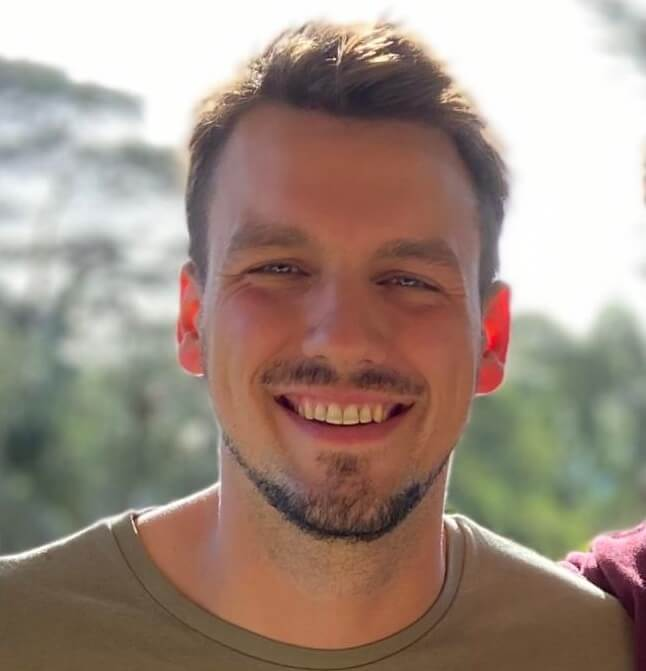

Agustín Cruz

Habilidades & Intereses
Soy alguien muy curioso, perfeccionista, resiliente e Ingeniero, lo que es súper útil en este ambiente para enfrentar los retos diarios y resolver problemas. Poseo pensamiento creativo, capacidad de aprender rápidamente y flexibilidad al cambio continuo.
Como una persona altamente motivada, con un nivel de inglés avanzado y experiencia trabajando en los Estados Unidos durante 4 años, busco nuevos desafíos en áreas de IT y desarrollo, para seguir creciendo profesional y personalmente.
Es por eso que actualmente dirijo mi perfil hacia el desarrollo web, habiendo estudiado HTML5, CSS, JavaScript y GitHub. También estoy estudiando React y tengo conocimientos de SEO web.
Disfruto mucho viajar y me encantaría trabajar de forma remota. Visitar nuevos lugares, practicar trekking, snowboard y nadar son mis pasiones, realmente amo la vida en la naturaleza.
Idiomas
Inglés Avanzado
Español Nativo
Italiano Básico
(+54) 1122552730
Información Personal
Estudios
Front End Developer
HTML5, CSS, JavaScript, GitHub, VSC, SEO
Ingeniero Industrial
Universidad Nacional de Mar del Plata (UNMDP), Argentina
Experiencia Laboral
Supervisor de Ventas - (2021-2022)
Trabajé como Supervisor de Ventas para la empresa de bebidas más importante de América Latina: Cervecería y Maltería Quilmes (ABInBev). Lideraba un equipo de 10 para lograr objetivos de ventas y resolver problemas diarios con los clientes.
Ubicación: Neuquén, Argentina.
Team Leader - (2014-2020)
Mientras trabajaba en Montage Deer Valley Hotel & Resort (5 estrellas y 5 diamantes según Forbes), comencé como asistente de mozo, después de 2 meses me convertí en mozo, y de inmediato en team leader para Yama Sushi, Vista Lounge y Apex Patio Restaurantes. Siguiendo los más altos estándares de servicio, para brindar una experiencia maravillosa a los huéspedes y clientes.
Ubicación: Park City, Utah, Estados Unidos.
Supervisor de Armado y Logística - (2015-2018)
El congreso anual IDEA es el congreso de empresarios más importante de Argentina, donde asisten los más poderosos del país para debatir sobre negocios y economía. Reciben obsequios de más de 50 sponsors diferentes, y estuve a cargo de hacerlo realidad durante 4 años, liderando un equipo de 10, para armar más de 1500 bolsos con obsequios, y una posterior entrega en cada habitación de hotel de cada participante, donde nada puede fallar.
Ubicación: Mar del Plata, Argentina.
Supervisor de Acción Promocional - (2017-2018)
En el verano 2017-2018 supervisé un equipo de 6 excelentes personas en una Campaña de Promoción para la mundialmente conocida empresa Danone en la principal ciudad veraniega del país.
Ubicación: Mar del Plata, Argentina.
Clases de manejo de PC a domicilio a gente mayor - (2008-2018)
Durante más de 10 años, desde los 17 hasta los 27, mientras estaba en la escuela y después en la universidad, daba clases particulares de manejo de PC para personas mayores, ayudándoles a aprender a usar las redes sociales, correos electrónicos , videollamadas, y diferentes cosas informáticas, con mucha paciencia y dedicación.
Ubicación: Mar del Plata, Argentina.